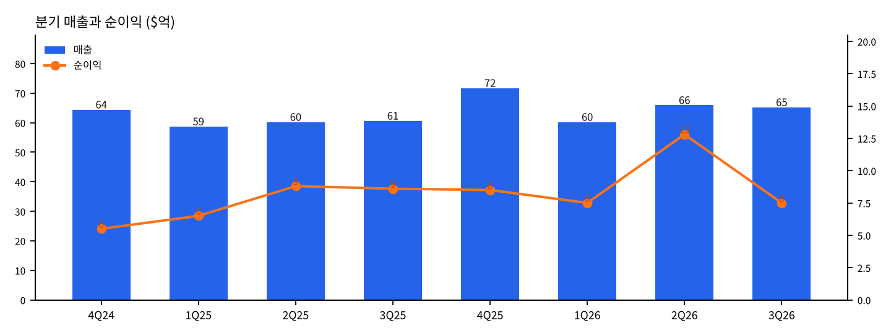
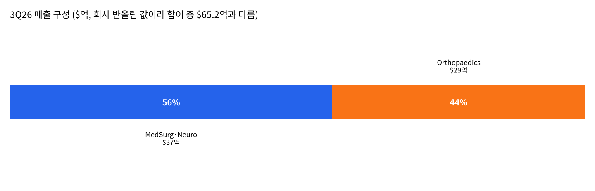
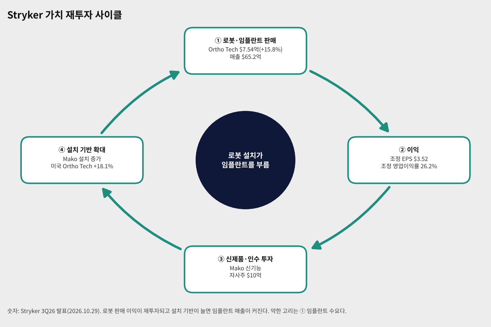

Stryker는 수술실에 들어가는 로봇·임플란트·기기를 팔고, 로봇(Mako)을 깔아 두면 임플란트 매출이 따라오는 구조다.
| 항목 | 내용 |
|---|---|
| 종목 | Stryker (SYK) · NYSE · 의료기기 · 미시간 포티지 |
| 최근 분기(3Q26) | 매출 $65.2억, 조정 EPS $3.52 |
| 핵심 상품 | Mako 로봇, 무릎·엉덩이 임플란트, 외상, 신경·척추, 수술 기기 |
| 직원 수 | 약 56,000명(트레이딩뷰) |
| 멀티플 | PER·PEG·P/S는 08~10 항목 표 참조 |
| 직책 | 인물 | 역할·특징 |
|---|---|---|
| 회장·CEO | 케빈 로보(Kevin Lobo) | "기대에 못 미쳤다"고 인정하고 가이던스를 낮춤 |
| CFO | 프레스턴 웰스(Preston Wells) | 4Q 유기 성장은 3Q와 비슷하다고 설명 |
경영 스타일: 설치 기반 + 인수. Mako를 병원에 깔고 임플란트·소모품으로 매출을 늘리며 인수도 병행한다.
관절 치환 수술 로봇. Ortho Tech 매출이 +15.8%로 가장 빠르게 늘었다.
2027년에도 시장 위 성장과 마진 개선을 목표로 한다.
다음 실적발표는 세 가지 질문에 답하는 자리다.
1. 관절 시장 둔화가 일시적인가?
2. Mako 설치가 임플란트로 이어지나?
3. 2027 가이던스에서 시장 위 성장을 약속하나?
한 줄 판정 규칙: 첫 질문(관절 시장)이 회복되면 약한 고리인 ② 임플란트 수요가 풀린다고 본다.
일정: 4Q26 실적 발표는 2027.02.02 예정(트레이딩뷰). 2027 가이던스가 함께 나온다.
| 분기 | 매출 | 순이익 | EPS | 조정 EPS | 특이 사항 |
|---|---|---|---|---|---|
| 4Q24 | $64.4억 | $5.5억 | 1.41 | 4.01 | |
| 1Q25 | $58.7억 | $6.5억 | 1.69 | 2.84 | |
| 2Q25 | $60.2억 | $8.8억 | 2.29 | 3.13 | |
| 3Q25 | $60.6억 | $8.6억 | 2.22 | 3.19 | |
| 4Q25 | $71.7억 | $8.5억 | 2.20 | 4.47 | |
| 1Q26 | $60.2억 | $7.5억 | 1.93 | 2.60 | 1Q 사이버 사고 영향으로 조정 EPS 낮음 |
| 2Q26 | $65.9억 | $12.8억 | 3.31 | 3.69 | |
| 3Q26 | $65.2억 | $7.5억 | 1.96 | 3.52 | 가이던스 하향, $2.93억 Peripheral Vascular 손상 |
매출은 트레이딩뷰 스캐너의 분기 총매출이라 회사가 발표한 순매출과 다를 수 있다. 3Q26 GAAP EPS는 Peripheral Vascular 영업권 등 손상 $2.93억이 포함돼 있다. 매출·순이익·EPS(GAAP 희석)는 트레이딩뷰 스캐너, 조정 EPS는 트레이딩뷰 실적 페이지의 Reported 값이다. 분기 정렬은 오래된 분기→최신이다.

흐름 요약: 최근 분기 매출은 $65.2억로 전년 동기 $60.6억 대비 +7.6%, 순이익은 $7.5억(전년 $8.6억)다. 최근 4분기 GAAP EPS는 $9.40, 조정 EPS는 $14.28다.
| 항목 | 내용 | 3Q26 금액 | 비고 |
|---|---|---|---|
| MedSurg·Neurotechnology | 수술 기기·신경·척추 | $37억 | +9.1%(유기) |
| Orthopaedics | 무릎·엉덩이·외상 등 | $29억 | +5.9%(유기) |

MedSurg가 더 빨리 크고, 관절 부문은 시장 둔화에 영향을 받는다.
Stryker는 환자 치료 결과를 높이는 의료기기를 만드는 것을 목표로 한다.
| 축 | 내용 |
|---|---|
| 로봇 | Mako 설치 기반 |
| 임플란트 | 무릎·엉덩이 |
| 환원 | 3Q 자사주 $10억 |

| 이동평균 | 값 | 종가 대비 | 위치 |
|---|---|---|---|
| 5일선 | $314.06 | +0.1% | 종가 위 |
| 20일선 | $314.59 | -0.1% | 종가 아래 |
| 50일선 | $294.96 | +6.5% | 종가 위 |
| 100일선 | $310.37 | +1.2% | 종가 위 |
| 200일선 | $320.94 | -2.1% | 종가 아래 |
52주 고가 $389.33(2026-03-02)·저가 $267.00(2026-09-11) 범위에서 종가 $314.24는 5일선, 50일선, 100일선을 웃돌고 20일선, 200일선은 밑돈다.
| 규칙 | 기준 | 현재 값 | 신호 |
|---|---|---|---|
| 장기 추세 필터 | 종가 vs 200일선 | $314.24 < $320.94 | 매도 |
| 중장기 교차 | 50일선 vs 200일선 | $294.96 < $320.94 | 매도 |
| 단기 교차 | 20일선 vs 50일선 | $314.59 > $294.96 | 매수 |
| 돈키언 채널 | 55일 고가 $349.48 / 저가 $267.00 | 중간값 $308.24 위 | 매수 |
| 1개월 모멘텀 | 21거래일 수익률 | +5.6% (기준 $297.60) | 매수 |
| 3개월 모멘텀 | 63거래일 수익률 | -4.6% (기준 $329.45) | 매도 |
| 6개월 모멘텀 | 126거래일 수익률 | +0.2% (기준 $313.50) | 매수 |
| 12개월 모멘텀 | 252거래일 수익률 | -12.6% (기준 $359.52) | 매도 |
| 종합 (8개 평균) | +0.00 | 중립 |
해석: 매수 신호 4개(단기 교차, 돈키언 채널, 1개월 모멘텀, 6개월 모멘텀), 매도 신호 4개(장기 추세 필터, 중장기 교차, 3개월 모멘텀, 12개월 모멘텀). CTA 점수 +0.00(중립). 14일 ATR $11.61 (3.7%), 52주 고가 $389.33 · 저가 $267.00.
| 가격 | 기준 | 무엇이 바뀌나 |
|---|---|---|
| $359.52 | 12개월 모멘텀 기준가 | 종가가 이 가격 위면 12개월 신호 매수 |
| $349.48 | 55일 고가 | 돌파 시 채널 상단 갱신 |
| $329.45 | 3개월 모멘텀 기준가 | 종가가 이 가격 위면 3개월 신호 매수 |
| $320.94 | 200일선 | 종가가 이 선 위/아래인지로 장기 추세 신호가 바뀜 |
| $313.50 | 6개월 모멘텀 기준가 | 종가가 이 가격 위면 6개월 신호 매수 |
| $308.24 | 돈키언 중간값 | 55일 채널 중간값 위/아래로 신호가 바뀜 |
| $297.60 | 1개월 모멘텀 기준가 | 종가가 이 가격 위면 1개월 신호 매수 |
| $267.00 | 55일 저가 | 이탈 시 채널 하단 갱신 |
가격 수준은 신호가 바뀌는 기준선일 뿐 진입·청산 가격 제안이 아니다. 20일/50일 교차는 이동평균 자체가 움직여 단일 가격으로 표시하지 않았다. 일봉·주봉은 종가 기준 직접 계산(고저 데이터 미사용)이다.
| 악재 요인 | 내용 | 강도 |
|---|---|---|
| 관절 시장 둔화 | 2026 시장 성장 약 2.5%, 가격·사전승인 부담 | 높음 |
| 가이던스 하향 | 유기 성장 6.5~7.0%, EPS $14.80~14.90 | 중간 |
| Peripheral Vascular 손상 | $2.93억 손상, 공급 문제 | 중간 |
| 티커 | 회사 | PER(TTM) | PEG | P/S | EPS 성장(YoY) |
|---|---|---|---|---|---|
| SYK | Stryker | 22.0배 | 2.61 | 4.56배 | +8% |
| MDT | Medtronic | 24.8배 | 2.07 | 3.50배 | +12% |
| BSX | Boston Scientific | 18.3배 | 0.70 | 3.01배 | +26% |
| ISRG | Intuitive Surgical | 50.9배 | 5.54 | 13.07배 | +9% |
| EW | Edwards Lifesciences | 61.3배 | – | 9.12배 | -27% |
비교 결론: Stryker의 PER 22.0배는 Medtronic보다 낮고 Intuitive Surgical·Edwards보다 낮으며 Boston Scientific(18.3배)보다 높다. PEG 2.61는 Medtronic(2.07)보다 높고 Intuitive Surgical(5.54)보다 낮다.
현금·부채는 트레이딩뷰 스캐너 값이다. 인수를 위한 부채가 있다.
| 지표 | 값 | 출처 | 해석 |
|---|---|---|---|
| 현금·단기투자 | $33억 | 트레이딩뷰 스캐너(최근 분기) | |
| 총부채 | $154억 | 트레이딩뷰 스캐너(최근 분기) | |
| 순부채(부채−현금) | $121억 | 내 계산 | 현금 대비 부채 부담 |
| 잉여현금흐름(TTM) | $46억 | 트레이딩뷰 스캐너 | |
| TTM 매출 | $263억 | 트레이딩뷰 스캐너 |
| 기준 | 매출 | P/S | 비고 |
|---|---|---|---|
| 내 계산(종가 ÷ 최근 4분기 매출 합계) | $263.0억 | 4.56배 | 시총은 정렬용 데이터에서만 사용 |
| 동종(트레이딩뷰) | – | MDT 3.50배 · BSX 3.01배 · ISRG 13.07배 · EW 9.12배 | 11.19 |
해석: 부채가 현금보다 많지만(아래 표) 영업현금흐름이 크다. 자사주 매입과 인수를 병행한다(내 해석).
EBITDA는 영업활동의 현금 창출력을 보는 지표이고, PEG는 PER을 EPS 성장률로 나눈 값이다. EBITDA·FCF는 트레이딩뷰 TTM 값이다.
| 지표 | 값 | 산출 |
|---|---|---|
| EBITDA(TTM) | $77억 | 트레이딩뷰 스캐너 |
| EBITDA 마진 | 29.3% | EBITDA ÷ TTM 매출(내 계산) |
| FCF 마진 | 17.5% | FCF ÷ TTM 매출(내 계산) |
| PER(GAAP TTM) | 33.4배 | $314.24 ÷ $9.40 |
| PER(조정 TTM) | 22.0배 | $314.24 ÷ $14.28 |
| 방식 | PER | EPS 성장률 | PEG | 판정 |
|---|---|---|---|---|
| 조정 EPS (TTM $14.28) | 22.0배 | +8% ($13.17 → $14.28) | 2.61 | 기준 초과 |
| GAAP EPS (TTM $9.40) | 33.4배 | +24% ($7.61 → $9.40) | 1.42 | 기준 초과 |
판정: 조정 EPS 기준 PEG 2.61 → 1.0 초과 PEG 기준은 1.0 이하 투자 적격, 0.5 이하 적극 매수다. EPS 성장률은 최근 4분기 EPS 합계를 직전 4분기 합계와 비교한 값(내 계산)이고, 일회성 항목이 있으면 조정 EPS 행을 함께 본다.

Stryker의 사이클: 판매 이익이 신제품·인수에 재투자돼 로봇 설치를 늘리고, 설치된 로봇이 다시 임플란트 매출을 만드는 순환이다.
| 고리 | 현재 숫자·근거 |
|---|---|
| ① 로봇·임플란트 판매 | 3Q26 Ortho Tech $7.54억(+15.8%) · 매출 $65.2억(+7.7%) |
| ② 이익 | 조정 EPS $3.52(+10.3%) · 조정 영업이익률 26.2% |
| ③ 신제품·인수 투자 | 3Q 자사주 매입 $10억 · 신제품 투자 금액은 보고서에 없음(내 해석) |
| ④ 설치 기반 확대 | 미국 Ortho Tech +18.1% |
사이클의 특징: 약한 고리는 ① 임플란트 수요다(미국 무릎 +1.3%, 엉덩이 −0.6%). "(내 해석)"은 보고서 수치가 아닌 해석이다.